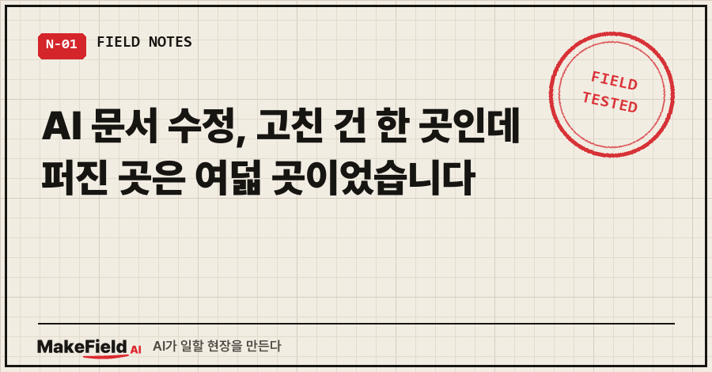
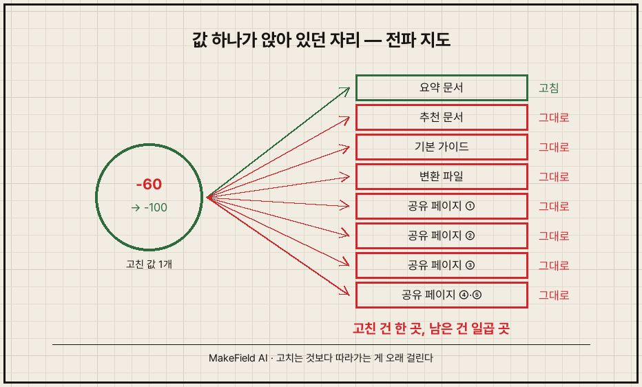
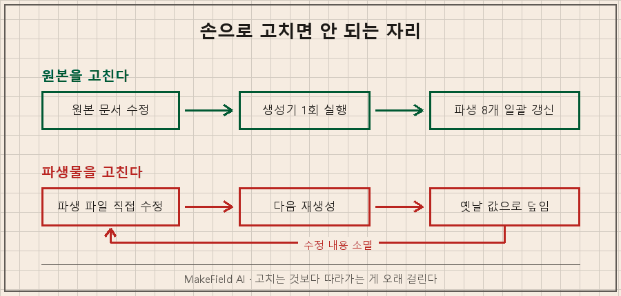
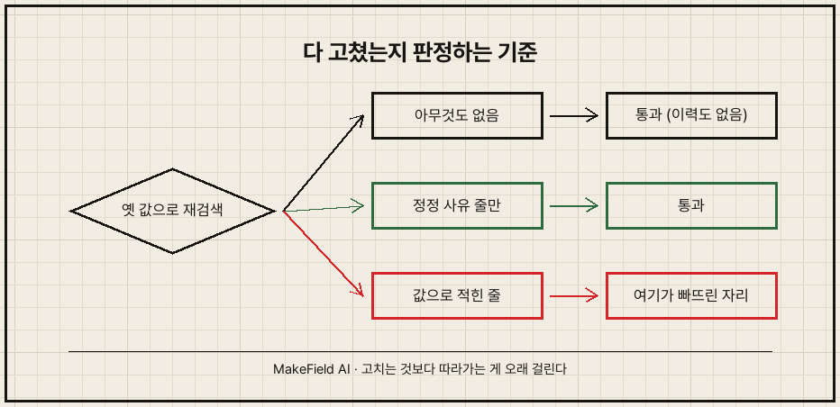

값 하나를 고쳤어요. 타이핑으로 치면 5초짜리 일이었습니다.
그날 실제로 손댄 자리는 여덟 곳이었고요.
먼저 결론부터 적을게요.
AI 문서 수정에서 오래 걸리는 건 고치는 일이 아니라, 그 값이 어디까지 퍼졌는지 찾는 일입니다. 값은 한 번 적히고 끝나지 않아요. 요약으로, 다른 문서의 인용으로, 변환된 파일로, 공유해둔 페이지로 계속 복제되거든요. 원본만 고치면 나머지는 어제 값을 그대로 말합니다.
저는 만드는 쪽에서 십오 년째 일하고 있어요. 그 바닥 도면에는 개정란이라는 칸이 붙어 있습니다. 몇 판인지, 뭐가 바뀌었는지, 언제 바뀌었는지 적는 칸이요. 형식적인 칸인 줄 알았는데, 현장에 구판 도면 한 장이 남아 있을 때 무슨 일이 벌어지는지 보고 나서 생각이 바뀌었습니다.
정작 제 개인 문서에는 그 칸을 안 만들어두고 있었어요..
2026년 8월 기준이고, 취미로 만든 게임 공략 문서에서 겪은 일입니다. AI한테 문서를 시켜서 두 개 이상 쌓아둔 상황이면 소재가 뭐든 그대로 적용돼요.
1. 값 하나가 여덟 자리에 흩어져 있었습니다
고친 값은 이거였어요. 최고 난이도에서 캐릭터가 받는 저항 페널티 숫자입니다.
수정 전 : 저항 페널티 −60%
수정 후 : 저항 페널티 −100 (한 단계 아래는 −40, 물리는 제외)값을 바꾸는 데는 몇 초가 걸렸습니다. 그런데 고치기 시작하니 같은 숫자가 다른 문서에도 앉아 있더라고요. 요약 문서에, 조합 추천 문서에, 공유해둔 페이지에.
그날 최종적으로 손댄 곳을 세어보니 로컬 문서 세 개에 공유 페이지 다섯 개, 합쳐서 여덟 곳이었습니다.
여기서 진짜 문제는 개수가 아니에요. 어디에 있는지 목록이 없다는 것입니다. 목록이 없으면 고치는 작업이 기억력 시험이 되거든요. 기억나는 데까지만 고치고 나머지는 조용히 옛날 값으로 남습니다.
그래서 저는 순서를 뒤집었어요. 고치기 전에 전파 지도부터 만듭니다. 그 값이 박힌 줄을 파일 이름과 줄 번호까지 통째로 뽑아놓는 거예요.
grep -rn -- "−60" *.md이 한 줄을 먼저 돌리고, 나온 목록을 그대로 할 일 목록으로 씁니다. 고칠 때마다 한 줄씩 지우고요. 기억이 아니라 목록이 남은 일을 세게 하는 겁니다.
AI 문서 수정을 AI한테 통째로 맡길 때도 이 순서가 먼저예요. 목록 없이 "고쳐줘"부터 시키면, 고쳤다는 말만 돌아오고 몇 곳을 고쳤는지가 안 남습니다.

2. 손으로 고치면 안 되는 자리가 따로 있어요
목록을 뽑고 나서 알게 된 게 하나 더 있습니다. 여덟 곳이 다 같은 자리가 아니더라고요.
| 자리 | 정체 | 어떻게 고치나 |
|---|---|---|
| 원본 문서 | 사람이 쓰는 정본 | 직접 고침 |
| 변환된 파일 | 원본에서 자동 생성된 파생물 | 손대지 말고 다시 생성 |
| 공유 페이지 | 원본을 옮겨 붙인 사본 | 원본 고친 뒤 다시 올림 |
가운데 줄이 함정입니다. 제 문서는 읽기용 파일이 따로 있는데, 그건 원본에서 스크립트가 찍어내는 물건이에요. 여기를 손으로 고치면 그 순간엔 맞는 값이 보입니다. 그런데 다음번에 스크립트를 돌리는 순간 원본에 있는 옛날 값으로 도로 덮여요.
고쳐야 할 대상이 파일이 아니라 그 파일을 만드는 코드일 때가 있는 거죠. 이번에도 새 문서를 목록에 등록해야 해서 생성 스크립트를 먼저 고쳤습니다.
TARGETS = [
("00_게임시스템_기본가이드.md", "00. 게임 시스템 기본 가이드.docx"),
...
# 2026-08-26 추가
("06_빌드오더_v3.md", "06. 빌드오더 v3.docx"),
]이렇게 해두고 한 번 돌리니 읽기용 파일 여덟 개가 같은 분에 통째로 다시 만들어졌어요. 타임스탬프가 전부 같은 시각으로 찍혀 있는 걸 보고서야 마음이 놓이더라고요.
손으로 고친 파생물은 다음 재생성까지만 사는 임시 수정입니다. 이건 AI한테 시킬 때도 똑같아서, "결과 파일 말고 그걸 만드는 자리를 고쳐라"를 안 붙이면 눈앞의 파일만 예쁘게 고쳐놓습니다.

3. 옛 판은 지우지 말고 옆방으로 보냅니다
여기서 손이 근질거리는 순간이 옵니다. 틀린 값이 적힌 옛 판을 지워버리고 싶어져요. 그래야 깨끗하니까요.
저는 안 지웁니다. _old/라는 폴더를 하나 만들어 통째로 밀어 넣어요. 이번에도 옛 판 세 개가 그 방으로 들어갔습니다.
지우면 안 되는 이유가 있어요. 나중에 "그때 왜 이렇게 바꿨더라"를 되짚을 근거가 사라지거든요. 그리고 지운 판이 어딘가에 인쇄돼 있거나 누가 받아 갔을 수 있는데, 그때 대조할 원본이 없으면 확인할 방법이 없습니다.
대신 고친 자리마다 정정 사유를 한 줄 남깁니다. 값만 갈아 끼우지 않고요.
⚠️ 2026-08-26 정정: 구버전 "약 −60%"는 오류.
실제는 −100(한 단계 아래는 −40). 상한은 80%.이 한 줄이 도면의 개정란입니다. 이게 없으면 나중에 이 문서를 읽는 사람이, 심지어 몇 달 뒤의 제가, 같은 자료를 다시 찾아보고 같은 고민을 처음부터 반복해요.
재미있는 건 이번에 틀렸던 값이 처음부터 맞게 적힌 문서도 같은 폴더에 있었다는 거예요. 두 문서가 나란히 앉아 다른 숫자를 말하고 있었는데, 따로 읽으면 둘 다 그럴듯해서 아무도 눈치를 못 챘습니다. 열흘쯤 그렇게 나란히 앉아 있었더라고요..
4. 다 고쳤는지 확인하는 방법
가이드에 이 절이 없으면 앞의 셋은 그냥 기분입니다. AI 문서 수정이 끝났는지 판정하는 기준은 의외로 간단해요.
옛날 값으로 다시 검색했을 때, 남아 있는 줄이 전부 "그건 틀렸다"고 적은 줄이면 통과입니다.
$ grep -rn -- "−60" *.md
07_아이템강화_..._v1.md:211: ⚠️ "−60%"로 적혀 있던 것은 오류다. 실제는 −100. (2026-08-26 정정)한 줄이 나왔고, 그 한 줄이 정정 기록이었어요. 그래서 통과입니다.
옛 값이 0건이어야 한다고 잡으면 오히려 안 됩니다. 정정 사유 줄에는 옛 값이 반드시 들어가 있어야 하니까요. 판정 기준은 "몇 건이냐"가 아니라 "남은 줄이 어떤 성격이냐"예요.
| 검색 결과 | 판정 |
|---|---|
| 아무것도 안 나옴 | 통과 (단 정정 이력도 없음) |
| 정정 사유 줄만 나옴 | 통과 ✅ |
| 그냥 값으로 적힌 줄이 나옴 | 미완료 — 거기가 빠뜨린 자리 |
같은 날 이 검색을 한 번 더 돌렸다가 다른 항목에서도 표기가 갈려 있는 걸 하나 더 찾았습니다. 한쪽은 "가변 3~8", 다른 쪽은 "5". 찾을 생각이 없었는데 목록이 알려준 셈이에요.

이런 질문을 받았어요
Q. 그냥 전부 찾아 바꾸기(일괄 치환) 하면 안 되나요?
파생물과 정정 사유 줄 때문에 위험합니다. 일괄 치환은 "그건 틀렸다"고 적어둔 줄까지 같이 바꿔버려요. 그럼 정정 기록이 "−100은 오류다. 실제는 −100"처럼 뜻 없는 문장이 됩니다.. 저는 치환 대신 목록을 뽑아놓고 한 줄씩 봅니다.
Q. AI한테 소급 수정까지 통째로 맡겨도 되나요?
맡기되 목록을 사람이 먼저 봅니다. 순서가 중요해요. "이 값이 들어간 줄을 전부 찾아 목록으로 달라"를 먼저 시키고, 그 목록을 확인한 다음에 "이 목록대로 고쳐라"를 시킵니다. 찾기와 고치기를 한 번에 시키면 몇 곳을 고쳤는지가 안 남아서 나중에 검증할 방법이 없어요.
Q. 매번 이렇게 하면 번거롭지 않나요?
번거롭습니다. 이번에도 값 자체를 바꾸는 시간보다 어디 있는지 찾는 시간이 훨씬 길었어요. 그런데 옛날 값 하나가 어딘가 남아 있다가 몇 달 뒤에 그걸 그대로 믿고 움직이는 상황이랑 비교하면, 이쪽이 훨씬 싼 거래입니다!
지난번 글에서 같은 폴더의 문서 두 개가 서로 다른 숫자를 말하고 있더라는 얘기를 했었는데요. 그건 갈라진 걸 발견한 이야기였고, 오늘 건 발견한 다음에 어디까지 따라가서 고쳤느냐의 이야기입니다. 고치는 것보다 따라가는 게 훨씬 오래 걸리더라고요.
여러분이 지난달에 고친 값은, 지금 문서 몇 개에서 옛날 얼굴로 남아 있을까요?
makefield.ai에는 이런 규칙들을 개정 이력까지 같이 붙여서 올려두고 있습니다.
태그: #AI문서수정 #문서소급수정 #문서버전관리 #AI자료업데이트 #AI가만든문서 #문서관리방법 #개정이력 #AI문서정리 #AI결과물검수 #AI에게일시키기 #자동화문서 #AI에이전트 #개인AI에이전트 #현장엔지니어 #MakeFieldAI